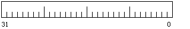
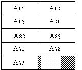
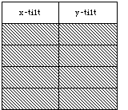

Legacy Document
Important: This document is part of the Legacy section of the ADC Reference Library. This information should not be used for new development.
Current information on this Reference Library topic can be found here:
ADC Home > Reference Library > Technical Notes > Legacy Documents > Hardware & Drivers >
Important: This document is part of the Legacy section of the ADC Reference Library. This information should not be used for new development.
Current information on this Reference Library topic can be found here:
|
DefinitionsThe data structure should reside in memory allocated by the driver at installation time. An application should attempt to access the data structure via an If the For an ADB pointing device driver, this structure should be pointed to by the
"optional data area" Pointing devices and drivers that support this data structure should indicate
that they do so by providing the following identification: the ASCII characters
 Bit fields within a longword are specified by a-b where a is the leftmost bit and b is the rightmost bit; for example, 7-0 specifies the fourth least significant byte in the longword. The data structure for tablets and other absolute pointing devices consists of a 40-byte header plus one 60-byte block per cursor. The header contains a pointer that can be used to extend this structure to contain additional information supplied by particular devices. HeaderThe first longword of the header consists of the following, as illustrated in Figure 2: data structure version number, synchronization semaphore, number of cursors, update flags.
An eight-bit field (version, bits 31-24) indicates the version number of the data structure format: a value of all zeros or all ones is invalid and indicates an uninitialized or possibly corrupted data structure; a value of 2 indicates that the format is the one here. The second eight-bit field (semaphore, bits 23-16) is used as a semaphore to coordinate access to this data structure among multiple processes. (There is currently no operating system support for multiple processes synchronizing by using a semaphore.) The third eight-bit field (cursors, bits 15-8) indicates the number of cursors on the device. Two pairs of flags are used to indicate updated information (new attributes (a) or new data (d)): one pair (app a, bit 7, and app d, bit 6) is set by the application and read and cleared by the device driver, while the other pair (dev a, bit 3, and dev d, bit 2) is set by the driver and read and cleared by the application. Other bits in the fourth byte (bits 5-4 and 1-0) must be zero. The second longword of the header contains the resolution.
An English and metric flag (m, bit 31) indicates whether measurements are in English (the bit is a 0) or metric (the bit is a 1) units. Other bits in the first byte (bits 30-28) must be zero. A 12-bit field (angular, bits 27-16) indicates the angular resolution sensed by the pointing device; the value in this field indicates the number of angular inclinations that can be sensed; the application can map this range into a full 360deg., 180deg., or actual inclination range of the device (this field is meaningful only if the orientation format reports angular measure, that is, if tilt or an attitude matrix is supported). A 16-bit field (space, bits 15-0) specifies the spatial resolution of the device (the units of measure used to specify the dimension of the sense area and origin offset (displacement) longwords in the header and in the coordinate longwords in the cursor blocks: units per inch for English and units per centimeter for metric). Thus, for example, 1000 in this field would indicate that dimensions are specified in 0.001 inches. The third longword of the header contains the X axis dimension of the sense area, the fourth longword the Y axis dimension of the sense area, and the fifth longword the Z axis dimension of the sense area. (If a tablet supports both portrait and landscape modes, this is reflected in the values in the X and Y dimensions.) The sixth longword of the header contains the X axis displacement of the sense area, the seventh longword the Y axis displacement of the sense area, and the eighth longword the Z axis displacement of the sense area. These axis displacements specify the X, Y, and Z coordinate values, respectively, at the sense area origin. The sense area origin is at the lower left in a 2-D sense area such as a tablet. The dimensions of the sense area are from a reference point; the displacements are the minimum values the device returns. The ninth longword of the header contains a pointer to the first byte of a block that specifies device-specific extensions. For example, if the device is intelligent, this may point to an area that contains a command buffer for programming the device. The tenth longword of the header contains four ASCII characters identifying the
device type, in this case Cursor BlockFor each cursor, the following block of information is provided. The first longword contains a transducer type, capability flags, pressure resolution, and orientation format, as illustrated in Figure 4.
The two-bit transducer type field (t, bits 29-28) specifies the pointing device: zero indicates that the type is unknown, one indicates pen, and two indicates a cursor. Three flags (disp x, disp y, and disp z; bits 26, 25, and 24) specify the capability to sense displacements in the X, Y, and Z dimensions, with a one indicating the capability is present. A four-bit field (orient, bits 19-16) indicates the format of orientation information: 0 indicates no orientation information is provided, 1 indicates an attitude matrix is supplied, 2 indicates pen tilt from vertical, and 23-20 are reserved for additional formats. A flag (p, bit 27) indicates whether tangential pressure is sensed, with a one indicating pressure is sensed. A 16-bit field (pressure resolution) indicates the number of pressure levels that can be sensed; zero in this field means that pressure is not sensed. This number applies to both normal and tangential pressure. As illustrated in Figures 5 and 6, the second and third longwords of the cursor block contain, respectively, the x scale and translation factors and y scale and translation factors to use when mapping between a screen window and an area on the tablet. The scaling and translation factors are provided by the driver. (Typically the factors are calculated from the tablet to screen mapping set by the user.) An application can read these factors or it can save and replace them with its own. The saved factors should be restored when the application terminates.
The x and y scale factors are positive fractions (related to the zoom factor of the application) and the translation values are such that the relation between the (mouse) cursor position and the tablet coordinates are as follows:
The negative in the y equation compensates for the different orientation of the tablet coordinate origin and the screen coordinate origin. (Tablet horizontal is normally the x coordinate and tablet vertical the y coordinate. See Note 1 for an example calculation.) The fourth longword of the cursor block contains the proximity flag, cursor update flag, mouse event flag, number of buttons, mouse-down pressure threshold, and button mask, as illustrated in Figure 7.
The mouse event bit (e, bit 29) is set to 1 by the driver if any button that provides a mouse click function is pressed. This bit is valid only when the s bit is 0. A 1 indicates that a mouse button is "down"; a 0 indicates all mouse buttons are "up." The mouse-down pressure threshold (bits 23-16) applies to a transducer capable of sensing pressure at one or more of its switches (for example, a stylus with a pressure-sensitive tip). The mouse-down pressure threshold value is set by the user (typically via a CDEV). It specifies the pressure level that must be met or exceeded for a mouse-down to be posted by the driver. When the pressure level drops below the threshold, the driver will post a mouse-up. If the pressure resolution (longword 1, lower word) is 256 or less, the threshold value can be used without modification. If the resolution exceeds 256, the threshold should be scaled as follows:
The proximity flag (p, bit 31) indicates whether the cursor is within the sense area (or was in proximity the last time the data structure was updated), with a one indicating that the cursor is in proximity. The cursor update flag (s, bit 30) is used to disable the driver from updating the system cursor or from posting mouse-up and mouse-down events; when this flag is set, the application assumes this responsibility. A five-bit field (num, bits 28-24) specifies the number of buttons on the device; a value of zero in this field indicates that the number of buttons is unknown. The button mask (button mask, bits 15-0 corresponding to buttons 15-0) indicates which buttons are used by the driver (for example, for system cursor control and mouse-up and mouse-down events) and which buttons are available for application usage when the s bit is zero. A value of 0 indicates that the button is being used by the driver; a value of 1 indicates that the button is available for use by an application. When the s bit is 1, the activity of all buttons is reported in the button update field. When the s bit is 0, only the activity of buttons marked as available (value of 1) in the button mask is reported. The button mask field is intended primarily to be read by an application. An application may alter it, but should restore it upon termination. See Note 2 for more details. The fifth longword of the cursor block contains the button update. The format of this longword is illustrated in Figure 8.
An eight-bit field (error, bits 31-16) can be used for an error code return; a zero in this field indicates no error (or no error code is returned). A 16-bit field (button update, bits 15-0 corresponding to buttons 15-0) encodes the active switch or switches, one switch per bit, with a one in the bit position indicating that the button is active. By convention, for a stylus, bit zero is identified with the tip. The sixth longword of the cursor block contains the pressure. Two 16-bit unsigned numbers (right justified) indicate detected pressure in normal and tangential directions. Figure 9 illustrates the format of this longword.
The seventh longword of the cursor block contains the time stamp. Each time this block of information is updated, this field records the number of ticks since system startup. The eighth, ninth, and tenth longwords of the cursor block contain the X, Y, and Z coordinates respectively. The eleventh through fifteenth longwords contain orientation information. For an attitude matrix, each longword contains two 16-bit fields; nine elements can be used to construct the attitude matrix. A11 and A12 are in the first longword, A13 and A21 are in the second, A22 and A23 are in the third, A31 and A32 are in the fourth, and A33 is in the fifth, as illustrated in Figure 10.  For pen tilt, the x-tilt is in the upper 16 bits of longword nine, while the y-tilt is in the lower 16 bits; the other four longwords are unused as illustrated in Figure 11.  The tilt values are signed numbers. The tilt values range from -(angular resolution / 2) to +(angular resolution / 2). When the pen is perpendicular to the tablet in both the x and y coordinates, the x and y tilt values are 0. Notes1. The following is an example of mapping between a screen window and the tablet: Assume that an area on the tablet with absolute coordinates (0,0), (0,10000), (10000,10000), (10000,0) is to be mapped onto a screen window with corresponding screen coordinates (0,720), (0,0), (720,0), (720,720); that is, the tablet's origin is in the bottom left corner while the window's is in the top left, and the tablet is 10,000 unit square while the window is 720 unit square. The x scale is 720/10000=0.072, as is the y scale. The value would actually be calculated using a 32 by 16 divide, with the numerator (720) in the upper 16 bits of the 32-bit numerator (and 0 in the lower 16 bits); the result is the "fractional" part of the division to be stored in the scale field in the memory structure. The x translation is 0 and the y translation is 720. These figures can be determined by taking the known coordinates for a single point in both frames and solving each equation for the following translation, using the coordinates for the tablet's absolute origin:
Now the tablet coordinate (1098, 253) is mapped into the window coordinate system (79,702):
2. An application, Control Panel device, or other (non-driver) entity may modify the following fields: Header, word 1: semaphore, app and dev flags; Cursor Block, words 2,3 : scaling and translation, and word 4: s bit, mouse-down pressure threshold (only if deemed necessary), and button mask. In particular, the English or metric flag in Header word 2 is established by the driver and cannot be changed by an application, Control Panel device, or other non-driver entity. Setting the s bit to 1 allows the application to view the state of all buttons via the button update field. It inhibits the driver, however, from performing any user defined functions associated with the buttons. If an application wishes to use some of the buttons, but leave some available for user functions, it can change the button mask (leaving the s bit at 0). The application should save the mask before replacing it with its own settings. Mouse events may or may not continue to be received depending on whether the application has taken control of the mouse function button(s). Upon termination the application should restore the button mask. The mouse-down pressure threshold is basically intended to be a read-only field. It indicates the user's preference for the amount of pressure to be exerted for a mouse-down to occur. Although it's not advised, an application can overwrite this field with its own value and restore it upon termination. 3. When an application terminates it should restore any parameters it may have changed. ReferencesInside Macintosh, Volume V, The Apple Desktop Bus Technical Note M.HW.ADB -- Space Aliens Ate My Mouse (ADB--The Untold Story) MacDTS Sample Code #17, TbltDrvr Downloadables
|
|